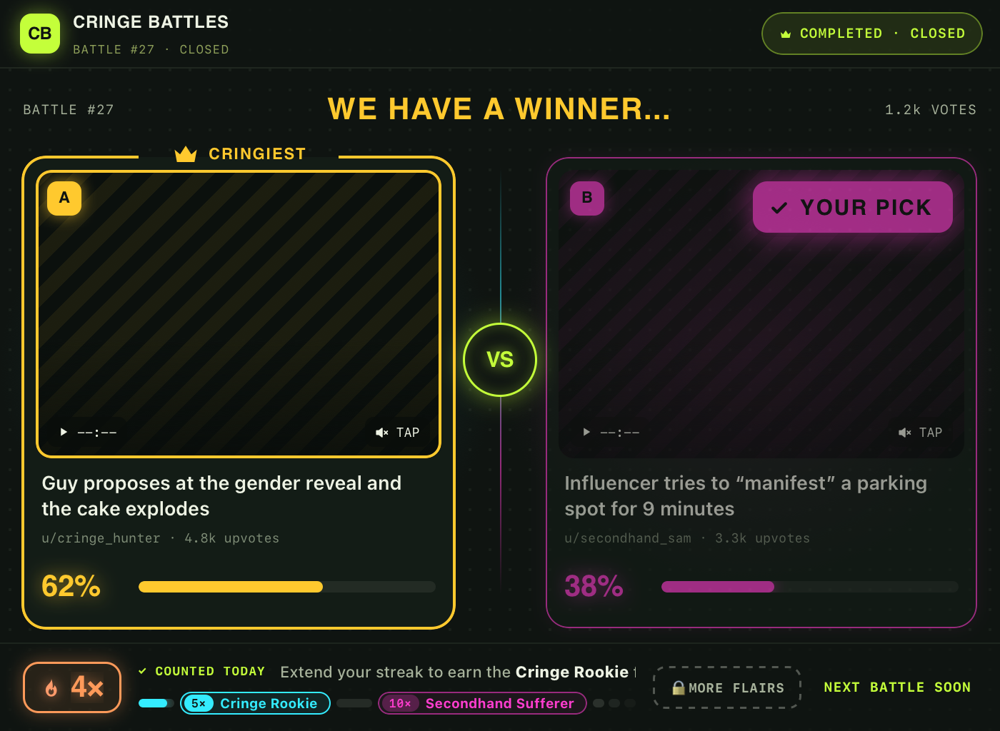
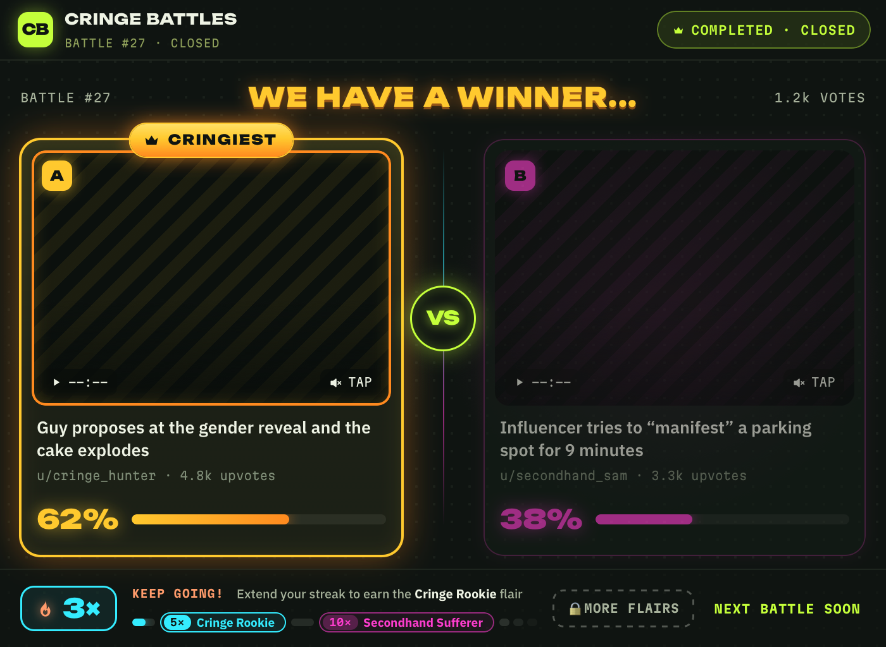

Closed winner screen, after the reveal (v0.0.41)
REDRAWN, NOT A SCREENSHOT These images are not captures of the running game. They are the real Battle React component, rendered with Battle #27 data (A wins 62/38, 1.2k votes) and laid out with the app's real built CSS at commit-time. Safari's engine (WebKit, via Playwright on a macOS GitHub runner) paints them at each size. Entrance animations are shown in their finished state. Clip thumbnails are placeholders (no video in a still).
The changes: the winner banner is gone, the title line reads WE HAVE A WINNER... in gold, and the winning card wears the YOUR PICK double stroke (card and video) in gold/orange with the crown set into the top of the frame. That crown replaces the small CRINGIEST chip. If you picked the winner, there's no YOUR PICK badge and the row reads ✓ YOU VOTED A. If you picked the loser, the badge stays on the losing card.
Picked the winner · inline 700×512

Picked the loser · inline 700×512

Phone width · 390×512


Didn't vote · inline 700×512

Full screen · 1100×760